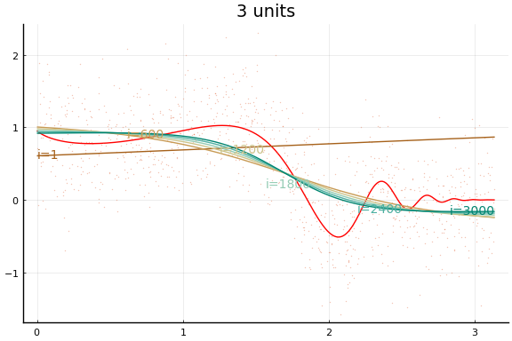
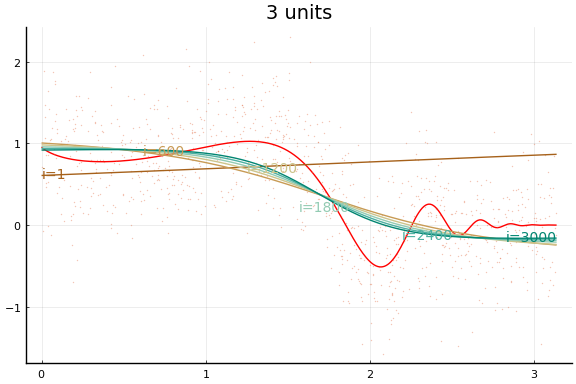
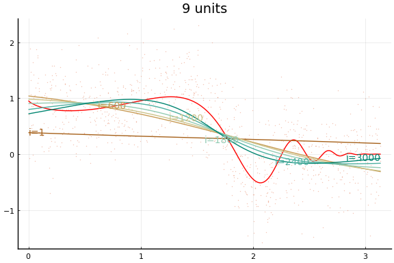
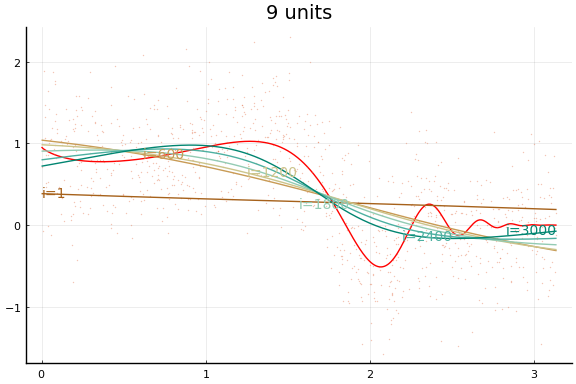
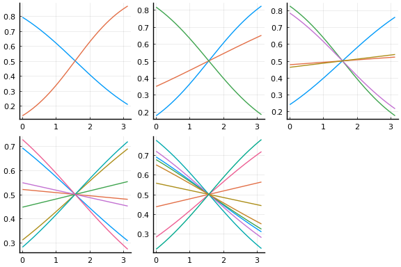
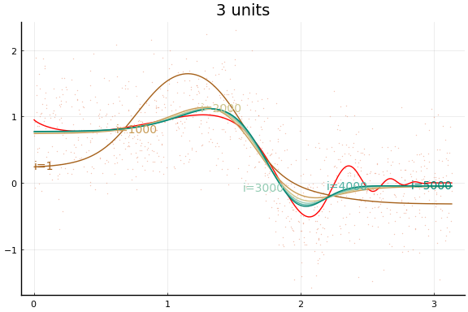
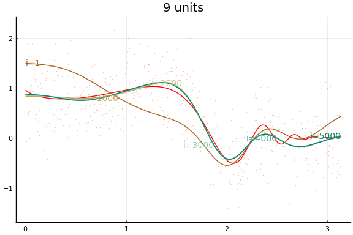
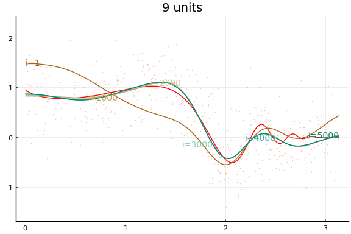
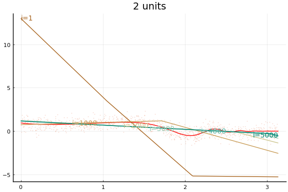
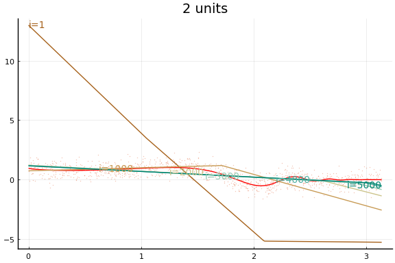

This work is licensed under a Creative Commons Attribution-ShareAlike 4.0 International License
About this document¶
This document was created using Weave.jl. The code is available in on github. The same document generates both static webpages and associated jupyter notebook.
Introduction¶
Neural networks, especially deep neural networks, have come to dominate some areas of machine learning. Neural networks are especially prominent in natural language processing, image classification, and reinforcement learning. This documents gives a brief introduction to neural networks.
Examples in this document will use
Flux.jl. An alternative Julia
package for deep learning is
Knet.jl. There is a
good discussion comparing Flux and Knet on
discourse..
We will not have Knet examples here, but the documentation for Knet is
excellent and worth reading even if you plan to use Flux.
Additional Reading¶
- Goodfellow, Bengio, and Courville (2016) Deep Learning
Knet.jldocumentation especially the textbook- Klok and Nazarathy (2019) Statistics with Julia:Fundamentals for Data Science, MachineLearning and Artificial Intelligence
Single Layer Neural Networks¶
We will describe neural networks from a perspective of nonparametric estimation. Suppose we have a target function, $f: \R^p \to \R$. In many applications the target function will be a conditional expectation, $f(x) = \Er[y|x]$.
A single layer neural network approximates $f$ as follows Here $r$ is the width of the layer. $\beta_j$ are scalars. $\psi:\R \to \R$ is a nonlinear activation function. Common activation functions include:
-
Sigmoid $\psi(t) = 1/(1+e^{-t})$
-
Tanh $\psi(t) = \frac{e^t -e^{-t}}{e^t + e^{-t}}$
-
Rectified linear $\psi(t) = t 1(t\geq 0)$
The $w_j \in \R^p$ are called weights and $b_j \in \R$ are biases.
You may have heard about the universal approximation theorem. This refers to the fact that as $r$ increases, a neural network can approximate any function. Mathematically, for some large class of functions $\mathcal{F}$,
Hornik, Stinchcombe, and White (1989) contains one of the earliest results along these lines. Some introductory texts mention the universal approximation theorem as though it is something special for neural networks. This is incorrect. In particular, the universal approximation theorem does not explain why neural networks seem to be unusually good at prediction. Most nonparametric estimation methods (kernel, series, forests, etc) satisfy a similar conditions.
Training¶
Models in Flux.jl all involve a differentiable loss function. The loss
function is minimized by a variant of gradient descent. Gradients are
usually calculated using reverse automatic differentiation
(backpropagation is a variant of reverse automatic differentiation
specialized for the structue of neural networks).
Low level¶
A low level way to use Flux.jl is to write your loss function as a
typical Julia function, as in the following code block.
using Plots, Flux, Statistics, ColorSchemes
# some function to estimate
f(x) = sin(x^x)/2^((x^x-π/2)/π)
function simulate(n,σ=1)
x = rand(n,1).*π
y = f.(x) .+ randn(n).*σ
(x,y)
end
"""
slp(r, activation=(t)-> 1 ./ (1 .+ exp.(.-t)), dimx=1 )
Construct a single layer perception with width `r`.
"""
function slp(r, activation=(t)-> 1 ./ (1 .+ exp.(.-t)), dimx=1)
# Parameters to be minimized wrt have to be declared for tracking
# for reverse mode autodiff.
w = param(randn(dimx,r))
b = param(randn(1,r))
β = param(randn(r))
θ = Tracker.Params([β, w, b])
pred(x) = activation(x*w.+b)*β
loss(x,y) = mean((y.-pred(x)).^2)
return(θ=θ, predict=pred,loss=loss)
end
x, y = simulate(1000, 0.5)
xg = 0:0.01:π
rs = [2, 3, 5, 7, 9]
cscheme = colorschemes[:BrBG_4];
figs = Array{typeof(plot(0)),1}(undef,length(rs))
for r in eachindex(rs)
m = slp(rs[r])
figs[r]=plot(xg, f.(xg), lab="True f", title="$(rs[r]) units")
figs[r]=scatter!(x,y, markeralpha=0.4, markersize=1, markerstrokewidth=0, lab="")
maxiter = 5000
for i = 1:maxiter
Flux.train!(m.loss, m.θ, [(x, y)], Flux.AMSGrad())
if (i % (maxiter ÷ 5))==0
l=Tracker.data(m.loss(x,y))
println("$i iteration, loss=$l")
yg = Tracker.data(m.predict(xg))
figs[r]=plot!(xg,yg, lab="", color=get(cscheme, i/maxiter), alpha=1.0,
annotations=(xg[loc], yg[loc],
Plots.text("i=$i", i<maxiter/2 ? :left : :right, pointsize=10,
color=get(cscheme, i/maxiter)) )
)
end
end
display(figs[r])
end
1000 iteration, loss=0.30472480917458217
Error: UndefVarError: loc not defined
#plot(figs..., legend=false)
Notice how even though a wider network can approximate $f$ better, wider networks also take more training iterations to minimize the loss. This is typical of any minimization algorithm — the number of iterations increases with the problem size.
Each invocation of Flux.train! completes one iteration of gradient
descent. As you might guess from this API, it is common to train neural
networks for a fixed number of iterations instead of until convergence
to a local minimum. The number of training iterations can act as a
regularization parameter.
Chain interface¶
Flux.jl also contains some higher level functions for creating loss
functions for neural networks. Here is the same network as in the
previous code block, but using the higher level API.
dimx = 1
figs = Array{typeof(plot(0)),1}(undef,length(rs))
initmfigs = Array{typeof(plot(0)),1}(undef,length(rs))
xt = reshape(Float32.(x), 1, length(x))
yt = reshape(Float32.(y), 1, length(y))
for r in eachindex(rs)
l = rs[r]
m = Chain(x->Flux.normalise(x, dims=2), Dense(dimx, l, Flux.σ), Dense(rs[r], 1))
initmfigs[r] = plot(xg, Tracker.data(m[1:(end-1)](xg'))', lab="", legend=false)
figs[r]=plot(xg, f.(xg), lab="", title="$(rs[r]) units", color=:red)
figs[r]=scatter!(x,y, alpha=0.4, markersize=1, markerstrokewidth=0, lab="")
maxiter = 3000
for i = 1:maxiter
Flux.train!((x,y)->Flux.mse(m(xt),yt), Flux.params(m), [(x, y)], Flux.AMSGrad() ) #,
#cb = Flux.throttle(()->@show(Flux.mse(m(xt),yt)),100))
if i==1 || (i % (maxiter ÷ 5))==0
l=Tracker.data(Flux.mse(m(xt), yt))
println("$(rs[r]) units, $i iterations, loss=$l")
yg = Tracker.data(m(xg'))'
loc=Int64.(ceil(length(xg)*i/maxiter))
figs[r]=plot!(xg,yg, lab="", color=get(cscheme, i/maxiter), alpha=1.0,
annotations=(xg[loc], yg[loc],
Plots.text("i=$i", i<maxiter/2 ? :left : :right, pointsize=10,
color=get(cscheme, i/maxiter)) )
)
end
end
display(figs[r])
end
2 units, 1 iterations, loss=0.35436347
2 units, 600 iterations, loss=0.28920898
2 units, 1200 iterations, loss=0.270453
2 units, 1800 iterations, loss=0.25283998
2 units, 2400 iterations, loss=0.25148967
2 units, 3000 iterations, loss=0.25099522
3 units, 1 iterations, loss=0.7615872
3 units, 600 iterations, loss=0.26830274
3 units, 1200 iterations, loss=0.25632748
3 units, 1800 iterations, loss=0.25287
3 units, 2400 iterations, loss=0.25158483
3 units, 3000 iterations, loss=0.25095615
5 units, 1 iterations, loss=0.530557
5 units, 600 iterations, loss=0.2753241
5 units, 1200 iterations, loss=0.2582122
5 units, 1800 iterations, loss=0.2531055
5 units, 2400 iterations, loss=0.2514935
5 units, 3000 iterations, loss=0.25091508
7 units, 1 iterations, loss=1.0650935
7 units, 600 iterations, loss=0.28389275
7 units, 1200 iterations, loss=0.26162043
7 units, 1800 iterations, loss=0.2564348
7 units, 2400 iterations, loss=0.2538039
7 units, 3000 iterations, loss=0.25237575
9 units, 1 iterations, loss=1.3130563
9 units, 600 iterations, loss=0.29749793
9 units, 1200 iterations, loss=0.26947337
9 units, 1800 iterations, loss=0.25973657
9 units, 2400 iterations, loss=0.25611424
9 units, 3000 iterations, loss=0.25409535
 


 

#plot(figs...)
The figures do not appear identical to the first example since the initial values differ, and the above code first normalises the $x$s.
Initial values¶
Initial values are especially important with neural networks because activation functions tend to be flat at the extremes. This causes the gradient of the loss function to vanish in some regions of the parameter space. For gradient descent to be successful, it is important to avoid regions with vanishing gradients. The default initial values of $w$ and $b$ used by Flux tend to work better with normalised $x$. The initial activation are shown below.
plot(initmfigs..., legend=false)

At these initial values, $w’x + b$, does change sign for each activation, but $w’x$ is small enough that $\psi(w’x + b)$ is approximately linear. This will make it initially difficult to distinguish $\beta \psi’$ from $w$,
We can improve the fit by choosing initial values even more carefully. The following code choses initial $w$ and $b$ to make sure the activation functions vary nonlinearly in the support of $x$. The initial activations functions are plotted below.
dimx = 1
figs = Array{typeof(plot(0)),1}(undef,length(rs))
initmfigs = Array{typeof(plot(0)),1}(undef,length(rs))
xt = reshape(x, 1, length(x))
yt = reshape(y, 1, length(y))
for r in eachindex(rs)
l = rs[r]
m = Chain(Dense(dimx, l, Flux.σ), Dense(rs[r], 1))
# adjust initial weights to make sure each node is nonlinear in support of X
Tracker.update!(m[1].W, -m[1].W .+ sign.(Tracker.data(m[1].W))*2*π)
# adjust initial intercepts to be in the support of w*x
Tracker.update!(m[1].b, -m[1].b .- m[1].W[:].*Float32.(π/(l+1):π/(l+1):π*l/(l+1)))
# make initial output weights optimal given first layer
X = vcat(1, Tracker.data(m[1](xt)))
bols = (X*X') \ (X*Float32.(y))
Tracker.update!(m[2].W, -m[2].W .+ bols[2:end]')
Tracker.update!(m[2].b, -m[2].b .- Float32(Tracker.data(mean(m(xt) .- yt))))
initmfigs[r] = plot(xg, Tracker.data(m[1](xg'))', lab="", legend=false)
figs[r]=plot(xg, f.(xg), lab="", title="$(rs[r]) units", color=:red)
figs[r]=scatter!(x,y, alpha=0.4, markersize=1, markerstrokewidth=0, lab="")
maxiter = 3000
for i = 1:maxiter
Flux.train!((x,y)->Flux.mse(m(xt),yt), Flux.params(m), [(x, y)], Flux.AMSGrad() ) #,
#cb = Flux.throttle(()->@show(Flux.mse(m(xt),yt)),100))
if i==1 || (i % (maxiter ÷ 5))==0
l=Tracker.data(Flux.mse(m(xt), yt))
println("$(rs[r]) units, $i iterations, loss=$l")
yg = Tracker.data(m(xg'))'
loc=Int64.(ceil(length(xg)*i/maxiter))
figs[r]=plot!(xg,yg, lab="", color=get(cscheme, i/maxiter), alpha=1.0,
annotations=(xg[loc], yg[loc],
Plots.text("i=$i", i<maxiter/2 ? :left : :right, pointsize=10,
color=get(cscheme, i/maxiter)) )
)
end
end
end
2 units, 1 iterations, loss=0.3088273000317558
2 units, 600 iterations, loss=0.2575219502156656
2 units, 1200 iterations, loss=0.25736631190095843
2 units, 1800 iterations, loss=0.2572223717098106
2 units, 2400 iterations, loss=0.2570867113327823
2 units, 3000 iterations, loss=0.2569557095372713
3 units, 1 iterations, loss=0.259812387468395
3 units, 600 iterations, loss=0.24904424795045094
3 units, 1200 iterations, loss=0.24811639685358053
3 units, 1800 iterations, loss=0.2475980553775825
3 units, 2400 iterations, loss=0.24721801168295424
3 units, 3000 iterations, loss=0.24690262460020013
5 units, 1 iterations, loss=0.25726167807321076
5 units, 600 iterations, loss=0.25028345530860585
5 units, 1200 iterations, loss=0.24891019836636952
5 units, 1800 iterations, loss=0.2480179613898816
5 units, 2400 iterations, loss=0.24731310904434178
5 units, 3000 iterations, loss=0.2467257257285448
7 units, 1 iterations, loss=0.25195873908297456
7 units, 600 iterations, loss=0.24553419939027676
7 units, 1200 iterations, loss=0.2450750789124235
7 units, 1800 iterations, loss=0.24475459242003503
7 units, 2400 iterations, loss=0.2444655227667202
7 units, 3000 iterations, loss=0.24419882498097087
9 units, 1 iterations, loss=0.24088785186244327
9 units, 600 iterations, loss=0.24085648607322233
9 units, 1200 iterations, loss=0.24081099023317673
9 units, 1800 iterations, loss=0.24079224885865802
9 units, 2400 iterations, loss=0.2407810822471446
9 units, 3000 iterations, loss=0.2407722102243151
nothing
plot(initmfigs..., legend=false)
And the fit figures.
for f in figs
display(f)
end

 

Rectified linear¶
Large applications of neural networks often use rectified linear activation for efficiency. Let’s see how the same example behaves with (leaky) rectified linear activation.
dimx = 1
figs = Array{typeof(plot(0)),1}(undef,length(rs))
for r in eachindex(rs)
l = rs[r]
m = Chain(Dense(dimx, rs[r], Flux.leakyrelu), Dense(rs[r], 1)) # notice the change
# adjust initial weights to make sure each node is nonlinear in support of X
Tracker.update!(m[1].W, -m[1].W .+ sign.(Tracker.data(m[1].W))*2*π)
# # adjust initial intercepts to be in the support of w*x
Tracker.update!(m[1].b, -m[1].b .- m[1].W[:].*Float32.(π/(l+1):π/(l+1):π*l/(l+1)))
# # make initial output weights optimal given first layer
X = vcat(1, Tracker.data(m[1](xt)))
bols = (X*X') \ (X*Float32.(y))
Tracker.update!(m[2].W, -m[2].W .+ bols[2:end]')
Tracker.update!(m[2].b, -m[2].b .- Float32(Tracker.data(mean(m(xt) .- yt))))
initmfigs[r] = plot(xg, Tracker.data(m[1:(end-1)](xg'))', lab="", legend=false)
figs[r]=plot(xg, f.(xg), lab="", title="$(rs[r]) units", color=:red)
figs[r]=scatter!(x,y, alpha=0.4, markersize=1, markerstrokewidth=0, lab="")
maxiter = 3000
for i = 1:maxiter
Flux.train!((x,y)->Flux.mse(m(xt),yt), Flux.params(m), [(x, y)], Flux.AMSGrad() ) #,
#cb = Flux.throttle(()->@show(Flux.mse(m(xt),yt)),100))
if i==1 || (i % (maxiter ÷ 5))==0
l=Tracker.data(Flux.mse(m(xt), yt))
println("$(rs[r]) units, $i iterations, loss=$l")
yg = Tracker.data(m(xg'))'
loc=Int64.(ceil(length(xg)*i/maxiter))
figs[r]=plot!(xg,yg, lab="", color=get(cscheme, i/maxiter), alpha=1.0,
annotations=(xg[loc], yg[loc],
Plots.text("i=$i", i<maxiter/2 ? :left : :right, pointsize=10,
color=get(cscheme, i/maxiter)) )
)
end
end
end
2 units, 1 iterations, loss=0.37421495604130545
2 units, 600 iterations, loss=0.30441563382558
2 units, 1200 iterations, loss=0.2986053686940071
2 units, 1800 iterations, loss=0.29842387819319055
2 units, 2400 iterations, loss=0.2983685970853709
2 units, 3000 iterations, loss=0.2983318699047731
3 units, 1 iterations, loss=0.28519629487232157
3 units, 600 iterations, loss=0.26513749792413366
3 units, 1200 iterations, loss=0.26321679864668024
3 units, 1800 iterations, loss=0.26216353880698284
3 units, 2400 iterations, loss=0.2616056134716333
3 units, 3000 iterations, loss=0.2612757011062495
5 units, 1 iterations, loss=0.26220736857619403
5 units, 600 iterations, loss=0.258385289255493
5 units, 1200 iterations, loss=0.2551627618685285
5 units, 1800 iterations, loss=0.2526917349075987
5 units, 2400 iterations, loss=0.25170188947673616
5 units, 3000 iterations, loss=0.2509223838036709
7 units, 1 iterations, loss=0.2517272398802207
7 units, 600 iterations, loss=0.25230692546018874
7 units, 1200 iterations, loss=0.2522133005387618
7 units, 1800 iterations, loss=0.25217825633235713
7 units, 2400 iterations, loss=0.25210858074998693
7 units, 3000 iterations, loss=0.25201329405290396
9 units, 1 iterations, loss=0.2503249711664288
9 units, 600 iterations, loss=0.24805364175606823
9 units, 1200 iterations, loss=0.24647723865759508
9 units, 1800 iterations, loss=0.24582358964536896
9 units, 2400 iterations, loss=0.24535359394405776
9 units, 3000 iterations, loss=0.24502292206356208
plot(initmfigs..., legend=false)
for f in figs
display(f)
end
 



Rate of convergence¶
- Chen and White (1999)
- $f(x) = \Er[y|x]$ with Fourier representation where $\int (\sqrt{a’a} \vee 1) d|\sigma_f|(a) < \infty$
- Network sieve :
The setup in Chen and White (1999) is more general. They consider estimating both $f$ and its first $m$ derivatives. Here, we focus on the case of just estimating $f$. Chen and White (1999) also consider estimation of functions other than conditional expectations.
The restriction on $f$ in the second bullet is used to control approximation error. The second bullet says that $f$ is the inverse Fourier transform of measure $\sigma_f$. The bite of the restriction on $f$ comes from the requirement that $\sigma_f$ be absolutely integral, $\int (\sqrt{a’a} \vee 1) d|\sigma_f|(a) < \infty$. It would be a good exercise to check whether this restriction is satisfied by some familiar types of functions. Barron (1993) first showed that neural networks approximate this class of functions well, and compares the approximation rate of neural networks to other function approximation results.
References [references]¶
Barron, A. R. 1993. “Universal Approximation Bounds for Superpositions of a Sigmoidal Function.” IEEE Transactions on Information Theory 39 (3): 930–45. https://doi.org/10.1109/18.256500.
Chen, Xiaohong, and H. White. 1999. “Improved Rates and Asymptotic Normality for Nonparametric Neural Network Estimators.” IEEE Transactions on Information Theory 45 (2): 682–91. https://doi.org/10.1109/18.749011.
Goodfellow, Ian, Yoshua Bengio, and Aaron Courville. 2016. Deep Learning. MIT Press. http://www.deeplearningbook.org.
Hornik, Kurt, Maxwell Stinchcombe, and Halbert White. 1989. “Multilayer Feedforward Networks Are Universal Approximators.” Neural Networks 2 (5): 359–66. https://doi.org/https://doi.org/10.1016/0893-6080(89)90020-8.
Klok, Hayden, and Yoni Nazarathy. 2019. Statistics with Julia:Fundamentals for Data Science, Machinelearning and Artificial Intelligence. DRAFT. https://people.smp.uq.edu.au/YoniNazarathy/julia-stats/StatisticsWithJulia.pdf.